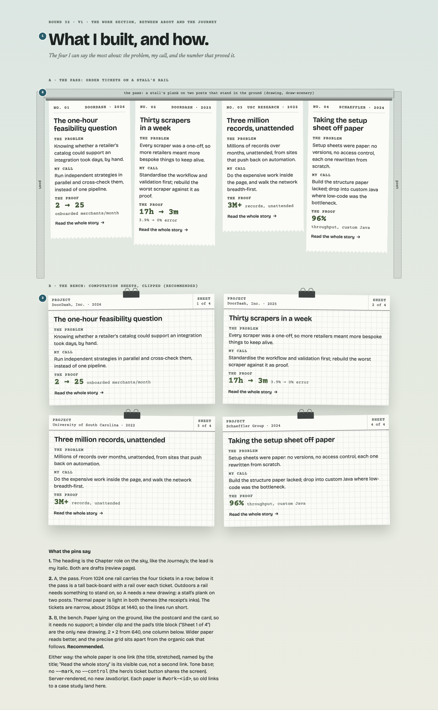
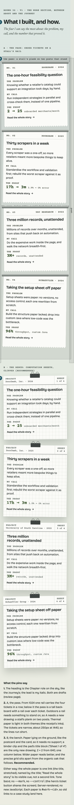
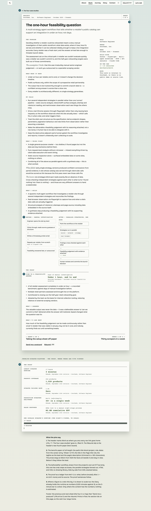
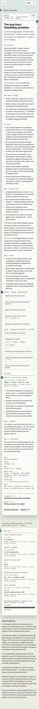
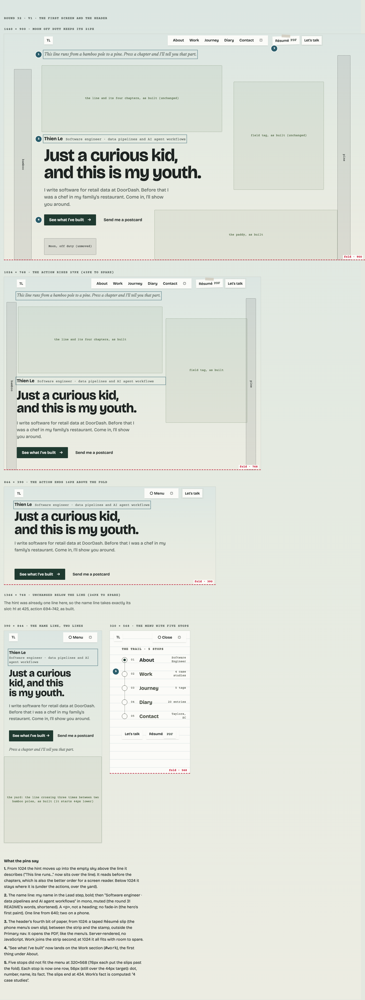
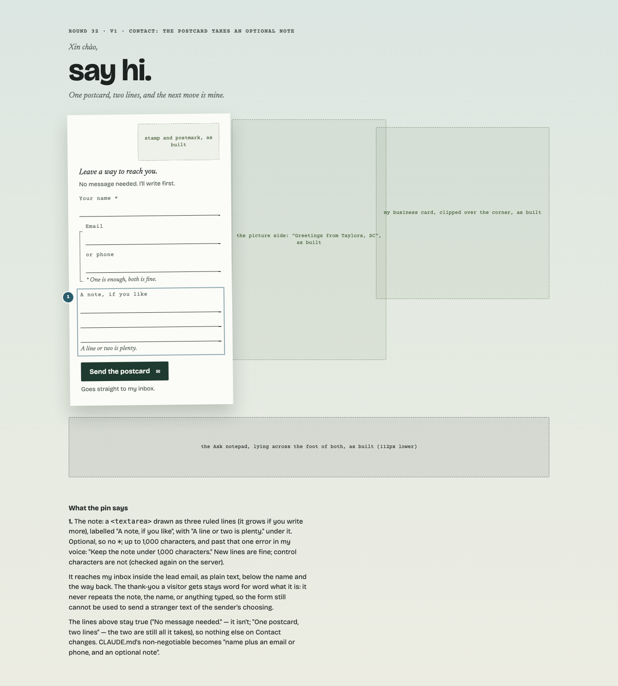
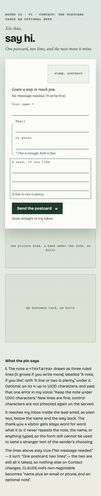

The work, first
An outside audit said someone judging me as an engineer meets my life story before my engineering. Four case studies are written and shown nowhere. This round puts them right after About, names me on the first screen, and lets a visitor reach the résumé and the work from anywhere. Every finding, checked against the code: audit.md. The site as it is today: design/.shots/r32-before (local, nine widths, both themes).
- A Work section right after About: each case study at rest as its problem, one decision and its proof; the whole story on its own page,
/work/<id>; the oak's tags that have one link to it. Nav: About · Work · Journey · Diary · Contact. - All four written case studies: DoorDash feasibility agent, DoorDash scraper platform, USC research collection, Schaeffler setup sheets.
- A name line over the unchanged h1.
- Also: Résumé in the desktop header; the copy cleanup (fun facts, the two "AI-ing"); an optional note on the postcard; Safari and Firefox test runs (no board needed).
Board: boards/work.html (resize it; ?theme=night). Two directions for the object. A, the pass: order tickets on a kitchen rail, from my restaurant years and the system's own name; outdoors it needs a stall's plank on two posts to hang from. B, the bench: graph-paper computation sheets, clipped, lying on the ground like the postcard; wider, easier to read, and precise beside the organic oak that follows. I recommend B.


Board: boards/work-page.html. The feasibility agent's page in full (its before/after workflow drawn from the content), and the scraper's proof, where five figures sit in a ledger and the runtime is drawn to scale from the Diary's own numbers.


Board: boards/hero.html. The first screen has no room to add a line: the action ends 16px above the fold at 1024×768, 26px at 1366×768, 22px at 844×390, and Moon off duty has 21px at 1440×900 (each one an e2e test). So from 1024 the hint moves up into the sky above the line it describes, and my name takes its place over the h1. Below 1024 the name line uses the space under the header. The header gains Work and a taped Résumé slip; the phone menu is recomposed so five stops fit at 320×568.

Board: boards/contact.html. Three ruled lines under the email-or-phone pair, above the button. The address side is too narrow from 1280 to split into message and address, so the note sits on lines like a postcard's back. It goes to my inbox only; the thank-you never repeats it.


Every new or changed line, and the fun-fact cuts. The case studies' own sentences are unchanged; these are the only new words.
| Where | Draft | From |
|---|---|---|
| Work, heading | What I built, and how. | Or: "Four problems, worked through." |
| Work, lead | The four I can say the most about: the problem, my call, and the number that proved it. | |
| Card labels | The problem · My call · The proof · Read the whole story → | |
| Feasibility agent, problem | Knowing whether a retailer's catalog could support an integration took days, by hand. | problem; the metric's "days of manual investigation" |
| Feasibility agent, my call | Run independent strategies in parallel and cross-check them, instead of one pipeline. | decisions[0], failureLesson |
| Scraper platform, problem | Every scraper was a one-off, so more retailers meant more bespoke things to keep alive. | problem |
| Scraper platform, my call | Standardise the workflow and validation first; rebuild the worst scraper against it as proof. | decisions[0], decisions[2] |
| USC research, problem | Millions of records over months, unattended, from sites that push back on automation. | problem |
| USC research, my call | Do the expensive work inside the page, and walk the network breadth-first. | decisions[1], decisions[2] |
| Schaeffler, problem | Setup sheets were paper: no versions, no access control, each one rewritten from scratch. | problem |
| Schaeffler, my call | Build the structure paper lacked; drop into custom Java where low-code was the bottleneck. | decisions[0], decisions[1] |
| Each card's proof | The oak's own tag for the project (2 → 25, 17h → 3m, 3M+, 96%) | highlights, which gain a projectId; no new figures |
| Feasibility agent, tagline (the page's description, ≤ 160) | A multi-strategy agent workflow that tells whether a retailer's public catalog can support an integration in under an hour, not days. | 133 characters; today's is 167, over the search snippet's cut |
| Case-study page, section labels | The problem · The assumption I broke · What made it hard · My calls · What I tried first · What failed · The lesson · What I built · The proof · What I learned · What I'd ask next · ← The four case studies · Sheet 1 of 4 | The type's own arc |
| Name line | Thien Le · Software engineer · data pipelines and AI agent workflows | Round 31 README, shortened |
| The cats at the Work stop | Tabby: "Mrrrow!" / "Problems he solved. Ooh!" · Grey: "Mrp." / "4 case studies. I read one." | The count is computed |
| Menu, Work's fact | 4 case studies | Computed |
| Postcard, the note | Label "A note, if you like" · under it "A line or two is plenty." · error "Keep the note under 1,000 characters." | |
| Receipt, TradeCorps status | AI-ing → testing | Say what's true; the line "AI trading agents" stays |
| Receipt, 3D printing status | AI-ing → prototyping | Say what's true; the line "AI print system" stays |
Fun facts. Sixteen today. Keep what is personal, funny or surprising; cut what is a metric, a restated fact or trivia. Cut ones leave the page with no sticky note.
| Entry | Fun fact | Draft |
|---|---|---|
| DoorDash | Calling the API instead of crawling the pages found data the crawl never reached. | Keep |
| Wordification | ElevenLabs says each word, Google's speech recognition listens back, and a miss gets regenerated. | Keep |
| Schaeffler | I fuzzy-matched 1M+ legacy records with the Damerau–Levenshtein algorithm, a name with two surnames in it. | Keep |
| USC research | The scrapers mimicked human interaction patterns to avoid detection, and ran unattended for months. | Cut · reads as evading defences |
| USC TA | Explaining a data structure to someone who isn't a CS major is the fastest way to find out whether I understand it. | Keep |
| USC degree | The cybersecurity minor changed how I read systems: I started looking for what a system assumes about the people using it. | Keep |
| CockyHacks | MentorHub was built during the hackathon itself, by a team of three that I led. | Cut · restates the page |
| Code to Give | At the Alpharetta hackathon in 2023, my team was Atlanta Community Food Bank Team 4. | Cut · trivia |
| LLM classifier | A DistilBERT fine-tuned on a 50K IMDB review dataset reached 92% accuracy. | Cut · a metric |
| ACM webmaster | ACM@USC, the chapter whose website I looked after, also ran the CockyHacks where MentorHub won Best Design. | Keep |
| Eastside High | I landed in December 2018, at fifteen, and was in an American classroom three weeks later. | Keep |
| Fu of Kyoto | I worked both sides of the family restaurant: the line, and the floor. | Keep |
| On my own | It never stopped. I still do some of it. | Keep |
| Chemical engineering | No chemical equation seemed more interesting than a linear equation. | Keep |
| Switch to CS | My friends told me to try computer science, and the recommendation was worth more than the plan. | Keep |
| Honors TA | Teaching people who did not choose this subject shows me which parts I only think I understand. | Cut · repeats the USC TA line |
- A or B for the Work section's object (I recommend B, the bench).
- The words above: as drafted, or edited. The two receipt statuses need what is actually true.
- The first screen: the hint moving above the line from 1024, so the name line fits without pushing the action off the screen.
Left alone, unless you say otherwise: the cats, "Practice makes AI.", a Lab section and photographs (no facts or pictures yet), rewrites of globals.css or the companion, CI. Not mine to answer: whether the DoorDash title should name a vendor (the audit asks; only you know).